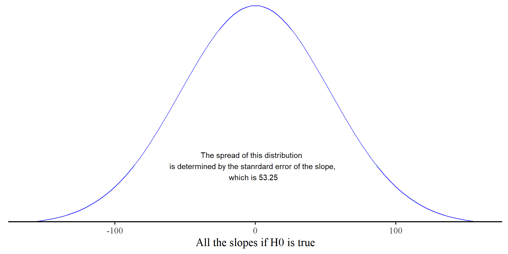

Plot code
# you need to install this package
library(extraDistr)
ggplot() +
geom_function(fun = dlst, args = list(mu = 0, sigma = 53.25, df = 1336), color = "blue") +
labs(x = "All the slopes if H0 is true") +
xlim(-(53.25*3), (53.25*3)) +
scale_y_continuous(expand = c(0,0)) +
annotate("text", x = -2, y = .002,
label = "The spread of this distribution \n is determined by the stanrdard error of the slope, \n which is 53.25") +
theme(axis.title.y=element_blank(),
axis.text.y=element_blank(),
axis.ticks.y=element_blank(),
axis.line.y = element_blank())